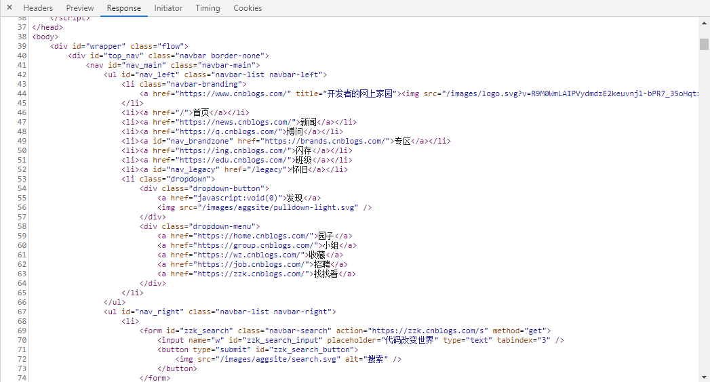
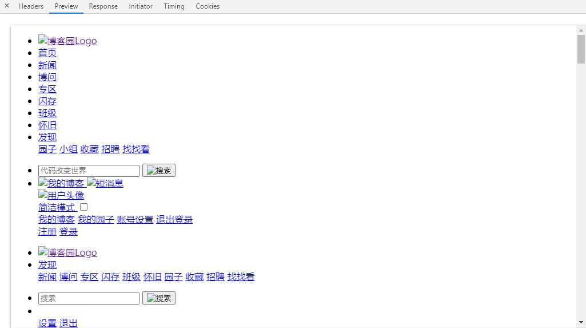
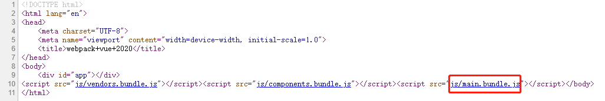
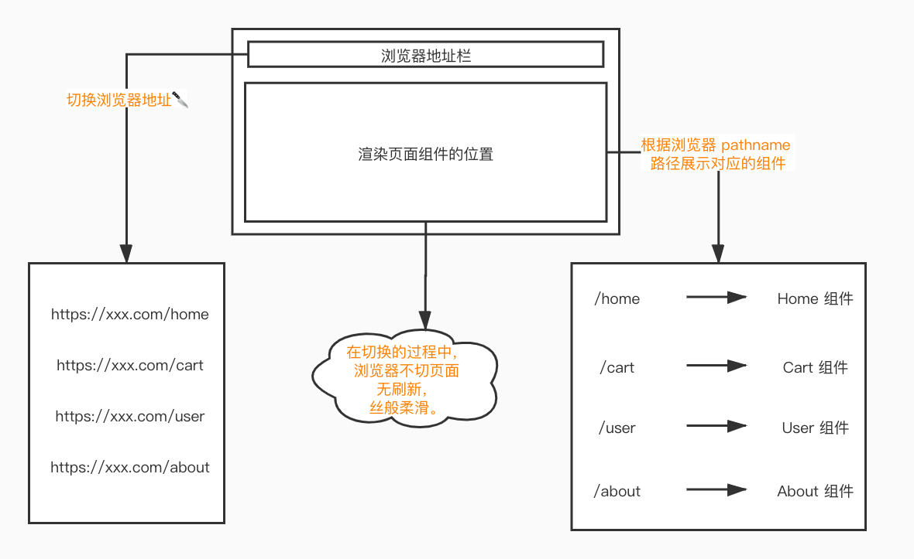
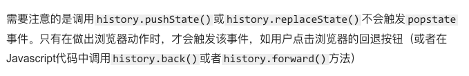

前端路由学习
假如面试官问你：什么是前端路由？为什么用前端路由？前端路由解决了什么？你该怎么回答呢=.=！
前言
首先先简单回答一下上面的问题，然后带着问题和答案去学习前端路由。
简单说就是前端控制页面跳转,而不需要要向后端去请求。
还不是因为时代在进步，单页应用的兴起，当然兴起的原因就不细说了。
后台和前端工作更加细化了，后台主要工作就是提供数据，前端负责展示，当然还有一些节约资源，减小服务器压力什么的。
多页应用和单页应用
多页应用和单页应用有什么区别呢？
多页应用
初学前端就知道，一个 HTML 就是一个页面，在浏览器输入网址后发起请求，返回来的 HTML 页面是最终呈现的效果，url类似于以index.html文件名结尾的都是多页应用。并且每次点击页面跳转，都会重新请求 HTML 资源。[1]
举个例子，博客园就是一个多页应用，每次加载页面，都会返回 HTML 资源以及里面的 CSS 等静态资源，组合成一个新的页面。可以通过查看后端返回值和预览进行查看：


网页上能看到什么图片或文字，你能在上述图片中找到相应的 HTML 结构，并且是单个的 HTML 文件，那也属于传统页面，也就是 DOM 直出。
单页应用
时代在进步，科技在发展，面对日益增长的网页需求，网页开始走向模块化、组件化的道路。随之而来的是代码的难以维护、不可控、迭代艰难等现象。面临这种情况，催生出不少优秀的现代前端框架，首当其冲的便是 React 、 Vue 、 Angular 等著名单页面应用框架。而这些框架有一个共同的特点，便是“通过 JS 渲染页面”。
举个例子，以前我们直出 DOM ，而现在运用这些单页面框架之后， HTML 页面基本上只有一个 DOM 入口，大致如下所示：

所有的页面组件，都是通过运行上图底部的 main.bundle.js 脚本，挂载到 <div id="app"></div> 这个节点下面。用一个极其简单的 JS 展示挂载这一个步骤：
1 | |
既然单页面是这样渲染的，那如果我有十几个页面要互相跳转切换，咋整！！？？这时候 前端路由 应运而生，它的出现就是为了解决单页应用，通过切换浏览器地址路径，来匹配相对应的页面组件。我们通过一张丑陋的图片来理解这个过程：

前端路由会根据浏览器地址栏 pathname 的变化，去匹配相应的页面组件。然后将其通过创建 DOM 节点的形式，塞入根节点 <div id="root"></div> 。这就达到了无刷新页面切换的效果，从侧面也能说明正因为无刷新，所以 React 、 Vue 、 Angular 等现代框架在创建页面组件的时候，每个组件都有自己的 生命周期 。
原理
前端路由 插件比较火的俩框架对应的就是 Vue-Router 和 React-Router ,但是它们的逻辑，归根结底还是一样的，用殊途同归四个字，再合适不过。通过分析哈希模式和历史模式的实现原理，让大家对前端路由的原理有一个更深刻的理解。
哈希模式
a 标签锚点大家应该不陌生，而浏览器地址上 # 后面的变化，是可以被监听的，浏览器为我们提供了原生监听事件 hashchange ，它可以监听到如下的变化：
- 点击
a标签，改变了浏览器地址 - 浏览器的前进后退行为
- 通过
window.location方法，改变浏览器地址
接下来我们利用这些特点，去实现一个 hash 模式的简易路由：
1 | |
当然，这是很简单的实现，真正的 hash 模式，还要考虑到很多复杂的情况，大家有兴趣就去看看源码。
历史模式
history 模式会比 hash 模式稍麻烦一些，因为 history 模式依赖的是原生事件 popstate ，下面是来自 MDN 的解释：

小知识：pushState 和 replaceState 都是 HTML5 的新 API，他们的作用很强大，可以做到改变浏览器地址却不刷新页面。这是实现改变地址栏却不刷新页面的重要方法。
包括 a 标签的点击事件也是不会被 popstate 监听。我们需要想个办法解决这个问题，才能实现 history 模式。
解决思路：我们可以通过遍历页面上的所有 a 标签，阻止 a 标签的默认事件的同时，加上点击事件的回调函数，在回调函数内获取 a 标签的 href 属性值，再通过 pushState 去改变浏览器的 location.pathname 属性值。然后手动执行 popstate 事件的回调函数，去匹配相应的路由。逻辑上可能有些饶，我们用代码来解释一下：
1 | |
这里注意，不能在浏览器直接打开该静态文件，需要通过 web 服务，启动端口去浏览网址。
总结
这篇文章主要知识点集中在前端路由这块，能完全看完，并且把实现原理捋一遍，我想你应该对现代前端框架会有一个新的理解。
参考
本博客所有文章除特别声明外，均采用 CC BY-SA 4.0 协议 ，转载请注明出处！